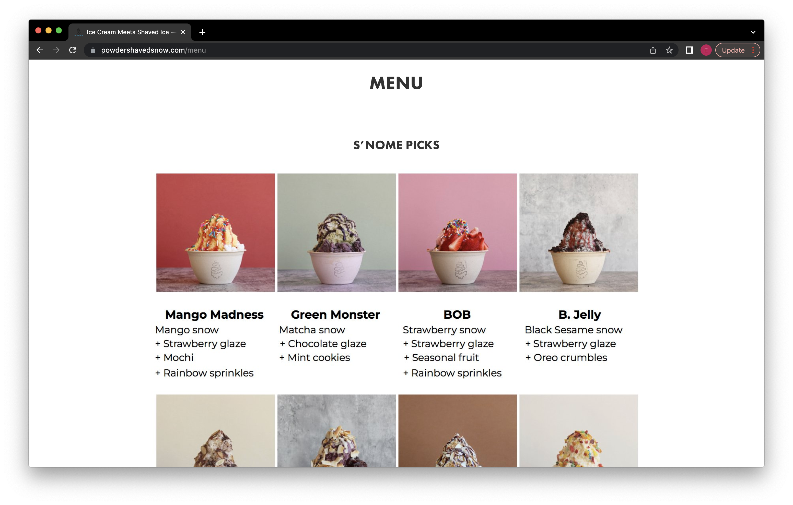
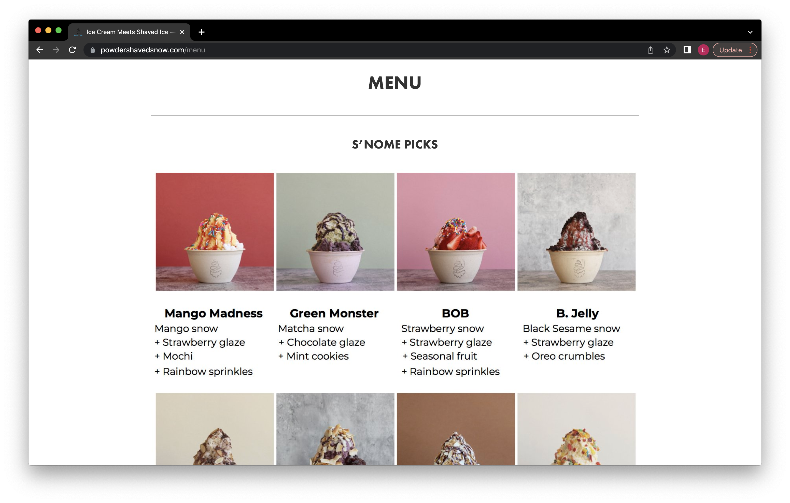
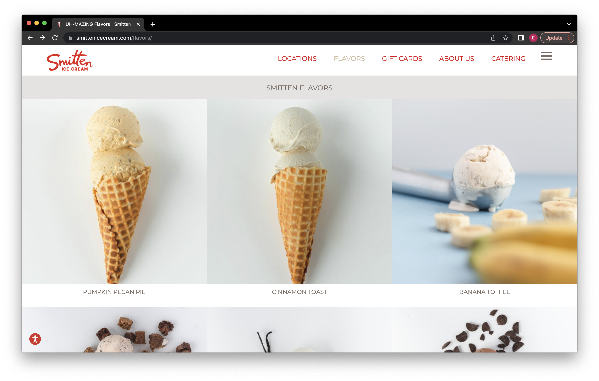
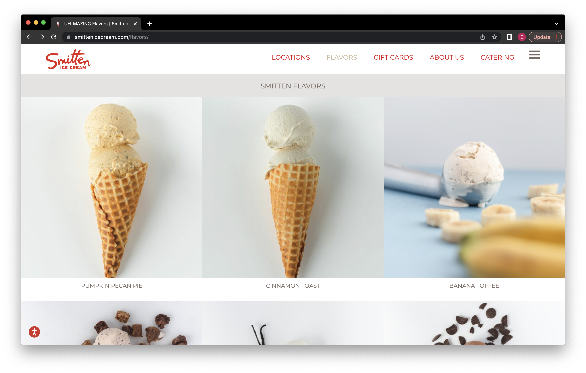
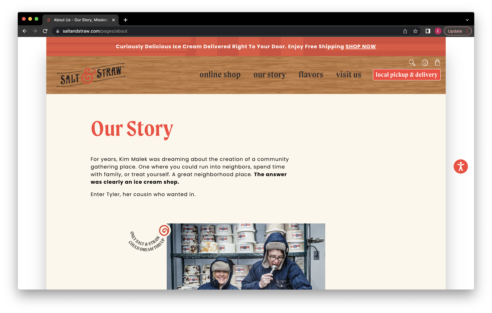
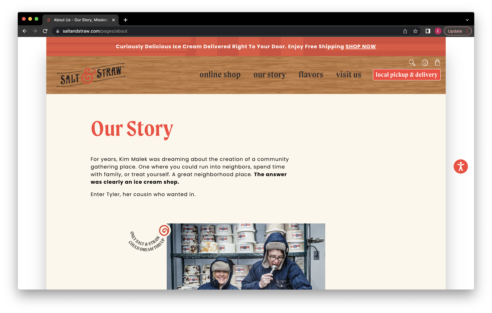

Final project proposal
Introduction
Milk and Sugar
Milk and Sugar is a local ice cream shop located on the corner of Polk ans Clay Street. While using the unique flavors of the month, Milk and Sugar will sure leave you wanting more!
Target Audience
The target audience are people who appreciate the taste and smoothness of ice cream and who are willing to try unique flavors. This ice cream shop does not only attract children, but also have more mature falvors for adults. The change in flovors monthly bring back this audience willing to try more. People who use this site are idividuals who want to order tubs of ice cream to go. Also, for individuals who want to see what the monthly falvors are.
Their primary tasks and goals are to see the flavors of the month and order pints to go. Also, will be able to easily find the locations and store hours making it easy for individuals to get ice cream.
Comparative analysis
Powder
 

Smitten Ice Cream
 

Salt and Straw
 

Website content
Home
Welcome to Milk and Sugar! New sesonal flavors are here
[ice cream image]
Menu
-
The Great Candycopia
Homemade Kit Kats, Reeses, Snickers, Heath bars folded into a diabolically delicious salted butterscotch ice cream
$5.25
-
Don Bugito’s Creepy Crawly Critters
Matcha ice cream with toffee-brittle mealworms and chocolate crickets (yes, real bugs!)
$5.25
-
Black Cat Licorice and Lavender
A silky, pitch-dark anise and fennel caramel with luminous salted lavender ice cream
$5.25
-
Jack o' Lantern Pumpkin Bread
Tender hunks of just-baked pumpkin bread and swaths of whipped cream cheese frosting in a pumpkin spiced ice cream
$5.25
Double Bubble Toil and Trouble (v)
2 spices and 3 fruits combined in a coconut cream for the perfect concoction that tastes just like bubble gum
$5.25
Chocolate Gooey Brownie
Chocolate ice creame with a soft gooey brownie
$5.25
Pear and Blue Cheese
Green sweet pears with brilliant blue cheese
$5.25
Cinnamon Snickerdoodle
Tastes just like a snikerdoodle cookie!
$5.25
Location
1703 Polk st
San Francisco, CA 94109
About Us
By hand, with unthinkable care. We fearlessly explore the history of flavor and discovery of emerging artisans, and see ice cream as a blank slate for storytelling. We make ice cream about the ingredients we use and the farms and artisans they come from. About how we cook and freeze and candy and sort and burn and smash and hand-drizzle and ribbon and spoon and sprinkle all of our ingredients in intriguing and unexpected ways.Our shops bring people together over a scoop. A neighborhood gathering place where you can share and learn more about yourself and your community.
[image of employees]